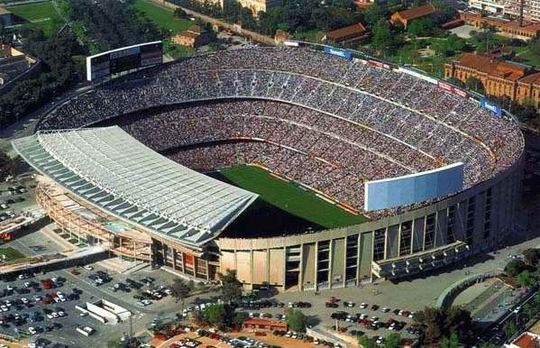

Barcelona is a Spanish professional soccer club from the city of the same name, the most titled club in Spain. It was founded in 1899 by a group of Swiss, English, Spanish and Catalan footballers led by Joan Gamper. The club has become one of the symbols of Catalonia, hence the motto - Més que un club - "More than a club". FC Barcelona fans are also known as culés.
"Barcelona were ranked 4th in the list of the best soccer clubs of the 20th century by FIFA and 5th by Kicker magazine. Also, the IFFHS ranked Barcelona in third place in the ranking of the best European clubs of the 20th century and in first place in the ranking of the best European clubs of the 21th century.
In 2009 Barcelona set a unique achievement, becoming the only European club to win all possible major tournaments in one year (three national - the Spanish Championship, the Spanish Cup and the Spanish Super Cup - and three international - the UEFA Champions League, the UEFA Super Cup and the Club World Cup). In addition, the Blue Granatas became the only Spanish club in history to achieve a "golden hat-trick" (Spanish Championship, Spanish Cup, UEFA Champions League).
In 2013, Barcelona was recognized as the most expensive club in the world, based on the transfer value of players
In 2015, Barcelona once again scored a golden hat-trick, becoming the first club in the history of European soccer to score a treble twice
The club's main stadium is Camp Nou, the most spacious stadium in Europe. Since January 19, 2009 the first team of the club changed the place of training at the sports complex
